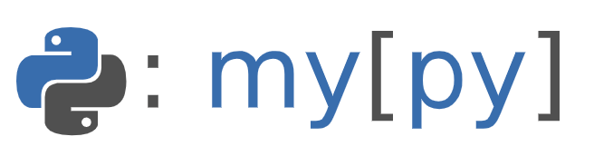

Backend: Tooling
Poetry has a scripting feature that can be used to map poetry commands to arbitrary python code. For example
poetry run hello
can be mapped to,
def hello():
print("Hello")
This is useful as it makes it easier to remember the commands. This is
done by creating a backend/scripts.py and editing the
backend/pyproject.toml file.
Most of these mappings will be to shell commands, for example poetry
run test will ideally be mapped to pytest tests/. The following
helper function ensures that any output is from the shell command
alone without any additional, and confusing, stack trace. It should be
added to backend/scripts.py,
import sys
from subprocess import CalledProcessError, check_call
def _check_call_quiet(commands: list[str], *, shell: bool=False) -> None:
try:
check_call(commands, shell=shell)
except CalledProcessError as error:
sys.exit(error.returncode)
Formatting

Python does not have an official format/formatter, however black is the de-facto formatter. We should add it to the project, as a development depenedency,
poetry add --allow-prereleases --dev black
which installed 20.8b1 (a pre release as black hasn't reached release stage yet). Whilst Black formats the code it doesn't order the imports, which is something I find very useful1. Therefore I also use isort which can be added,
poetry add --dev isort
Both Black and isort require configuring, which should be added to the
backend/pyproject.toml. These are my preferred settings,
[tool.black]
line-length = 100
target-version = ["py39"]
[tool.isort]
combine_as_imports = true
force_grid_wrap = 0
include_trailing_comma = true
known_first_party = "backend"
line_length = 100
multi_line_output = 3
no_lines_before = "LOCALFOLDER"
order_by_type = false
Black and isort format python code in .py files, however any code in templates will be left unformatted. Thankfully djhtml can be used to format the templates, it is added,
poetry add --dev djhtml
This allows two commands reformat to autoformat the code and
format to check the formatting of the code to be added in the
backend/pyproject.toml file,
[tool.poetry.scripts]
format = "scripts:format"
reformat = "scripts:reformat"
and the backend/scripts.py file,
def format() -> None:
_check_call_quiet(["black", "--check", "--diff", "src/", "tests/"])
_check_call_quiet(["isort", "--check", "--diff", "src", "tests"])
_check_call_quiet(
"find src/ -name *.html | xargs djhtml --tabwidth 2 --check",
shell=True,
)
def reformat() -> None:
_check_call_quiet(["black", "src/", "tests/"])
_check_call_quiet(["isort", "src", "tests"])
_check_call_quiet(
"find src/ -name *.html | xargs djhtml --tabwidth 2 --in-place",
shell=True,
)
which allows,
poetry run reformat
poetry run format
Remeber
Whenever we install a new third party dependency the isort
configuration needs updating, specifically the
backend/pyproject.toml file should gain the name of the import,
e.g. for quart-auth,
[tool.isort]
known_third_party = "..., quart_auth"
where ... is the existing value.
Linting

Checking that the type hinting is consistent throughout i.e. the code is being called with the types the author expected catches a fair number of bugs. I use mypy to check this, as installed,
poetry add --dev mypy
and configured by adding the following to backend/pyproject.toml,
[tool.mypy]
allow_redefinition = true
disallow_untyped_defs = true
warn_unused_ignores = true
Flake8 is my goto Python linting tool, along with the flake8-print, and pep8-naming plugins. These ensure I have readable (easier to understand) code, without any print statements. To install these,
poetry add --dev flake8 flake8-print pep8-naming
and configured in the backend/setup.cfg file2, (these settings
avoid conflicts with the other tooling),
[flake8]
ignore = E203, E252, W503, W504
max_line_length = 100
I like to check that there is no dead code, i.e. code that is never called. This happens when I forget to delete, or get confused. My goto tool is vulture, which can be installed,
poetry add --dev vulture
and configured in the backend/pyproject.toml file,
[tool.vulture]
min_confidence = 100
Finally I like to check, and get some reassurance, that the code has no obvious security vulnerabilities. For this I use bandit, as installed,
poetry add --dev bandit
which requires no special configuration.
These can then be combined into a single lint command, with these
additions to backend/pyproject.toml,
[tool.poetry.scripts]
lint = "scripts:lint"
...
and backend/scripts.py file,
def lint() -> None:
_check_call_quiet(["mypy", "src/backend/", "tests/"])
_check_call_quiet(["flake8", "src/", "tests/"])
_check_call_quiet(["vulture", "src/"])
_check_call_quiet(["bandit", "-r", "src/"])
Testing

Python has unittest as part of its standard library, however I think pytest is a superior option. As pytest is very feature rich (see fixtures) and allows for very simple and clear tests,
def test_addition():
assert 1 + 1 == 2
To install pytest, and the pytest-asyncio plugin,
poetry add --dev pytest pytest-asyncio
and configured to ensure that locals are shown on error (as this
really helps debug the failure), by adding the following to
backend/pyproject.toml,
[tool.pytest.ini_options]
addopts = "--showlocals"
This allows a test command, with these additions to
backend/pyproject.toml,
[tool.poetry.scripts]
test = "scripts:test"
...
and backend/scripts.py file,
def test() -> None:
_check_call_quiet(["pytest", "tests/", *sys.argv[1:]])
passing the additional arguments allows commands like
poetry run test -k test_basic.py
to run just the tests in a test_basic.py file.